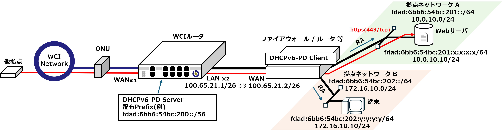
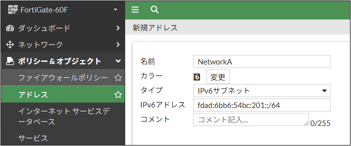

3.1. IPv6でWebサーバを公開する
本事例では、WCIルータとファイアウォール/ルータ等のセキュリティアプライアンスを接続し、IPv6およびIPv4のデュアルスタック環境における運用構成について説明します。
1.構成概要
注釈
IPv4に関する設定内容については、" 2.2. Webサーバを公開する(NAT,NAPT) "に記載された構成に準拠します。
2. 接続構成とネットワーク
接続構成図
{kind=link}
注意
※1,2 導入機種により接続ポートが異なります。詳しくは" 1.1. WCIルータについて "の導入機種に応じたポート対応表をご確認下さい。
拠点ネットワークA
拠点ネットワークB
3. セキュリティアプライアンスについて
セキュリティアプライアンス（ファイアウォールやルータ）は以下の機能が実装されている必要があります：
DHCPv6-PDクライアント機能 （IA_PD対応）
RA（Router Advertisement）とSLAACの送信機能
4. WCIポータルの設定
サブネットの登録

[サブネット管理] より、IPv6アドレス欄の [登録] ボタンを押下します。

[サブネット名] に名称を設定します。任意の名称を設定できますが本事例では
sample_dual_subnetとします。[プレフィックス] を指定します。
64を設定します。[ネットワークアドレス] を指定します。
fdad:6bb6:54bc:201を設定します。[登録] ボタンを押下します。

画面に先ほど設定したサブネットが登録されている事を確認します。 このサブネットが拠点ネットワークAのアドレス帯となります。
接続
sample_dual_subnet を指定してください。フィルタ管理

画面の [新規] ボタンを押下します。

フィルタ登録画面にて、[サブネットID] を押下します。

サブネット選択画面にて先ほど登録した サブネット fdad:6bb6:54bc:201 の行の [選択] を押下します。

フィルタ登録画面にて、サブネットが選択されたことを確認します。
続いて、フィルタリング (インバウンド)にて [追加] ボタンを押下します。
[プロトコル] :
TCP, [ポート] :443と設定します。[登録] ボタンを押下します。
5. セキュリティアプライアンスの設定例
物理インターフェース構成

IPv6機能の表示設定
{kind=link}
アドレス設定
WCIアドレス(IPv6)の拠点配布範囲は以下の様に定義されています。
fda0::/12
注意
[アドレス] → [IPv6 Address] → [新規作成] からアドレスを以下の様に編集します。
{kind=link}
{kind=link}
|
|
|
WCI |
|
fda0::/12 |
拠点ネットワークAを設定します。
{kind=link}
|
|
|
NetworkA |
|
fdad:6bb6:54bc:201::/64 |
Tip
今回はNetworkAのサブネット単位で設定しますが、 Webサーバ の固定アドレスのみを設定することも可能です。
設定した アドレス群 は後述のポリシー設定の際に使用します。
WAN設定
wan1 にWCIルータを接続する構成とするため、 wan1 を選択します。{kind=link}
IPv6アドレスの自動設定 を有効化します。
DHCPv6 プレフィックス委任 を有効化します。
-「+」ボタンを押して IAPD プレフィックスヒントのフィールドを表示します。
以下の値を入力します： ※不要な項目は x ボタンで削除できます。
|
|
|
1 |
|
::/56 |
LAN設定(拠点ネットワークA)
internal1 配下に拠点ネットワークAを構成するため、 internal1 を選択します。{kind=link}
以下の様に設定します。
|
|
|
委任済 |
|
1 |
|
wan1 |
続いて、CLI設定よりRA（ルータ広告）を有効にし、SLAAC によってアドレスや DNS 情報を端末に配布する設定を行います。
config system interface
edit "internal1"
config ipv6
set ip6-mode delegated
set ip6-send-adv enable
set ip6-delegated-prefix-iaid 1
set ip6-upstream-interface "wan1"
set ip6-subnet 0:0:0:1::/64
config ip6-delegated-prefix-list
edit 1
set upstream-interface "wan1"
set delegated-prefix-iaid 1
set subnet 0:0:0:1::/64
set rdnss-service delegated
next
end
end
next
end
ポリシー設定(拠点ネットワークA)
{kind=link}
|
|
|
wan1 |
|
internal1 |
|
WCI(アドレス設定で作成したもの) |
|
NetworkA(アドレス設定で作成した物) |
|
HTTPS |
セキュリティプロファイルを設定します(省略)
Tip
443/tcp を許可する設定ですが許可するプロトコル・ポートを変更することで任意のサービスを公開することが可能です。LAN設定(拠点ネットワークB)
internal2 配下に拠点ネットワークAを構成するため、 internal2 を選択します。{kind=link}
以下の様に設定します。
|
|
|
委任済 |
|
1 |
|
wan1 |
続いて、CLI設定よりRA（ルータ広告）を有効にし、SLAAC によってアドレスや DNS 情報を端末に配布する設定を行います。
config system interface
edit "internal2"
config ipv6
set ip6-mode delegated
set ip6-send-adv enable
set ip6-delegated-prefix-iaid 1
set ip6-upstream-interface "wan1"
set ip6-subnet 0:0:0:2::/64
config ip6-delegated-prefix-list
edit 1
set upstream-interface "wan1"
set delegated-prefix-iaid 1
set subnet 0:0:0:2::/64
set rdnss-service delegated
next
end
end
next
end
ポリシー設定(拠点ネットワークB)
{kind=link}
|
|
|
internal2 |
|
wan1 |
|
all |
|
all |
|
ALL |
送信元 , 宛先, サービス は利用用途に応じて適切に設定してください。 宛先 については all を推奨しています。※1
セキュリティプロファイルを設定します(省略)
Tip
※1 WCIポータルを始めとするWCIサービスのアドレス範囲に限って宛先に指定したい場合は、別途WCIサービスのipv6アドレス範囲をお伝えしますのでお問い合わせください。
これで、拠点ネットワークBからWCI Portalや他接続拠点で公開されているIPv6サービスへのアクセスが可能となります。